9/2/2022:
This week we learned about mechanical engineering and what fields of specialty there is in mechanical engineering. We started getting familiar with the tinkercad website. As a "friday challange"we had to choose a kitchen appliance and make it through tinkercad. I chose a mirowave and although I had fun, it was hard to get used to the webste.9/16/2022:
This week we were working on our Rube Goldberg CAD as well as the physical building of it. Our challenge today was to build a paper boat that would hold a certain amount of weight. We had a boat paper boat that had two long pieces on the side. After a minute the boat sank. We came to the conculsion that the surface area is what mattered in keepint the boat afloat.This challenge was very fun and I enjoyed seeing everyone's designes.9/22/2022
This week we workded on physically building our Rube Goldberg designes. We were set on our design and it took us about 2 class periods to build it. On Friday we finally got to test out our machine. We tried a few times but for some reason the balloon wasn't popping. After making some adjustments we tried again. However, it still didn't work. We had one more idea and that was changing the needle. We guessed that maybe the needle wasn't sharp enough, which was why the balloon wasnt popping. Finally, it worked. We spent the rest of the period on friday just finishing up our CAD as well as updating our websites. 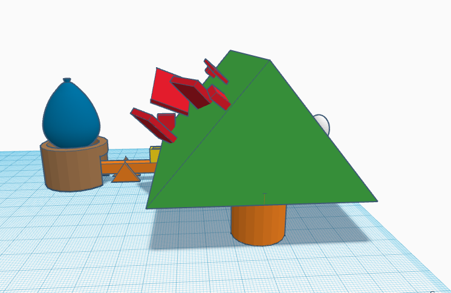9/30/2022
We started off this week working on disecting a laptop computer. We used multiple sizes of screwdrivers and collected all the pieces. We were able to find the motherboard, CPU, RAM, Hard Drive, WiFi Module, Fan, Heat Sink, Disk Drive, Audio, and Battery. This was a very interesting lab because I was able to learn how a computer actually works and what components need to be part of it in order for the computer to function properly. Hopefully next week we will be able to do something that includes the same topic, so I can learn more. Lastly, we had a guest speaker who taught us how computers are programed and the basic parts of computers, which I really enjoyed.10/7/2022:
This week we learned about bioengineering and how we use the simplicity of nature in the world today. For example, spiders use proteins in order to create their web. The spider web catching a fly, would be a net catching a 737 airplane. This strong string like protein can be used for clothes. This is a sustainable option, in which we can get one step closer in helping our planet. On Wednesday, we learned about prosthetics and we were assigned to CAD a prosthetic of an animal. I chose a dolphin tail, so the image you see on the bottom is my desgin of a dolphin tail prosthetic. Overall, this field of engineering really intersted me and I would consider persuing this as a carrer. 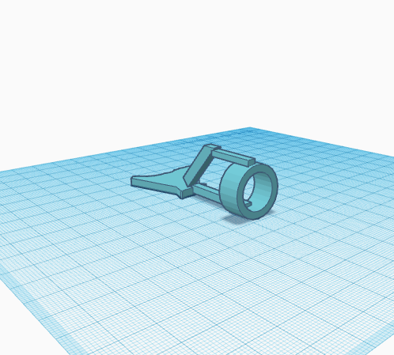 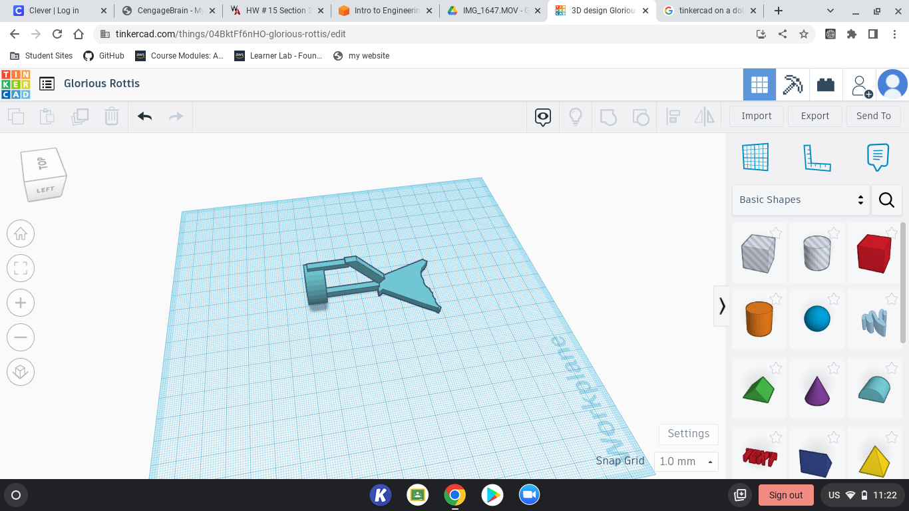10/14/2022
This week we learned about aerospace engineering. We learned the different types of fields and degrees needed to pursue this engineering career. In addition, we learned how an airplane flies with lift, drift... We worked on a CAD this week that allowed us to build our rocket. I however left for the second half of the week to go to Canada, where I visited two universities. 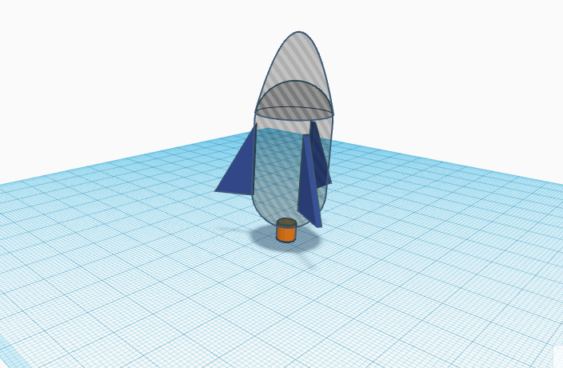10/21/2022
This was our building week for our rocket. The goal of our rocket was to launch and fly the highest. After looking at photos of rockets we decided to have a thin rocket. On friday we were able to test our rocket. Being built from cardboard, paper, and a plastic water bottle our rocket was really light. As an effect our rocket was able to fly far, however, it did not fly in a straight line. Overall, this project was really fun and I learned a lot about aerospace engineering. 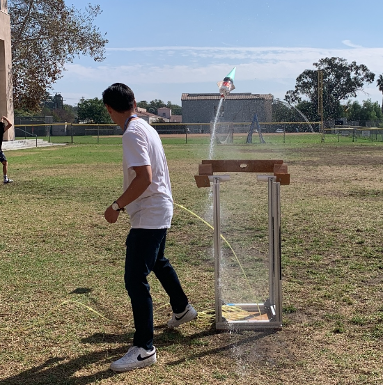11/4/2022
This week we are working on electrical engineering. We learned about motherboards and their components. We learned Ohms Law, resistors, capacitators, and the volts. We used tinkercad to test our circuits, to see if we were able to light our LED. This is a field of engineering I am not considering because it is challenging and takes a lot of prior knowledge before. Below are the different currents I worked on. I added or removed resistors and tested to see if the lightbulb worked. 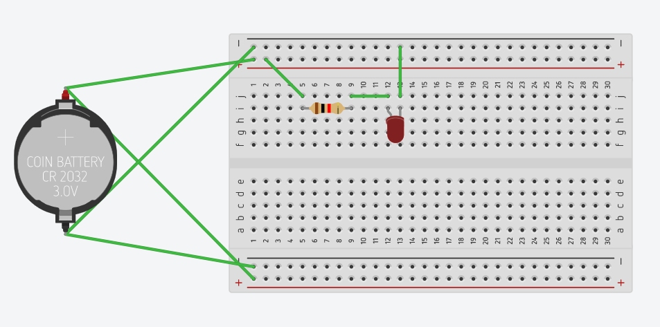 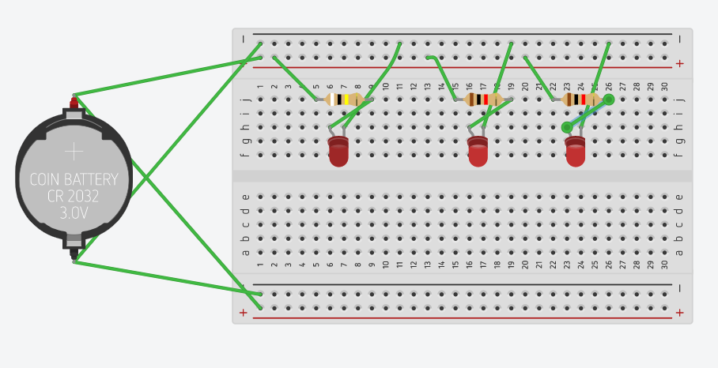 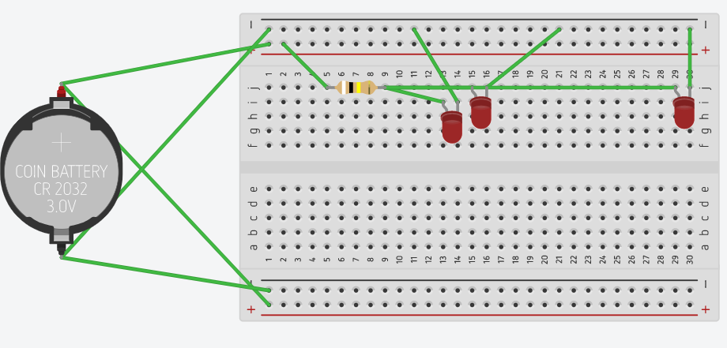11/9/2022
This week was a short week, so we only had two periods, however we were able to accomplish a lot in these days. On tuesday we worked on actually building circuits using breadboards, LED, and wires. This taught me how precise all the wiring had to be in order to get the light to turn on. It was challenging to get the hang of it and everything was so small that it got hard to see, but once I got used to it, it was easier.11/18/2022
This weeek we continued to work on different circuits. We created a profile on Arduino, which we used on Wednesday to make a circuit and code the lights, so they can flash in different oreders. On Friday we had a challenge and we were asked if there were more doors or wheels in CV. After going out, estimating the amount of doors and wheels we came to the conclusion that there might be more wheels on campus. 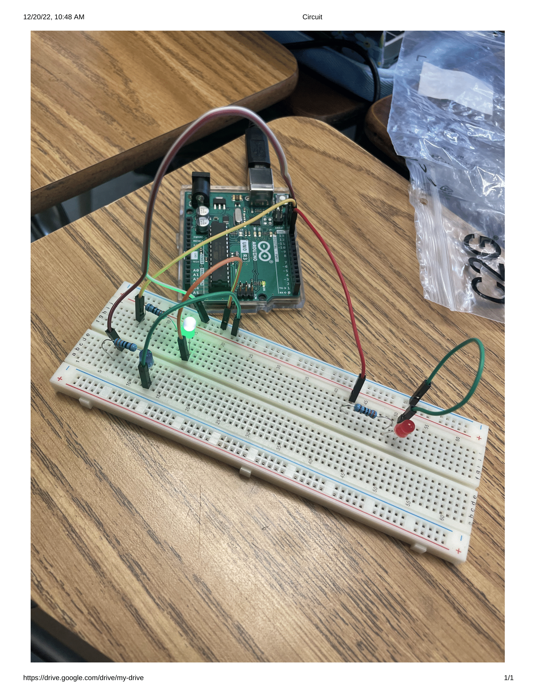12/2/2022
This week we were introduced to architectural engineering. I learned a lot and we were told what our final project would be. Our group would be given 100 spagetties and we could only use 20 for each trial. This meant that we could only have 4 trials and then we would have 20 left for our final. After working on the CAD and discussing the design we were ready to start. 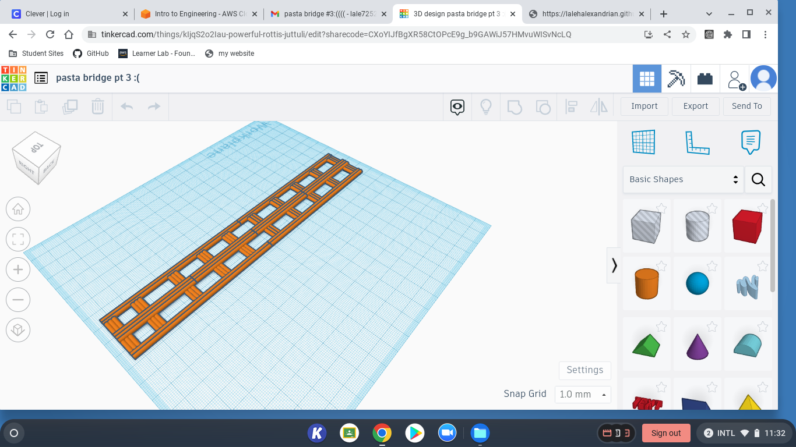12/9/2022
This week we couldn get much done. On monday when we had a short class we decided to cut our noodles so we could connect them more easily. Then on Wednesday we clued our noodles together but on a piece of cardboard which backfired. After waiting for the glue to dry we were able to see our bridge on friday. We tried using a needle to try and pop our bridge up but we ended up breaking our bridge, and that whole process took the entire class period.12/16/2022
This week we had a lot of progress. We decided to put tape on the cardboard so then the glue won stick and we could remove our bridge easily. This worked!! On Wednesday we worked on our bridge and by Friday we were able to test it. Our first bridge was strong. We didn use alot of glue and the bridge was able to hold 1,409 grams of water before breaking. Our second bridge however was thin, but we had a lot of glue making the bridge very flexible. After holding almost a bucket of water it began to tear, compared to the other bridge which just snapped. We came to the conclusion that we wanted our bridge to have less glue, which would not allow it to tear. 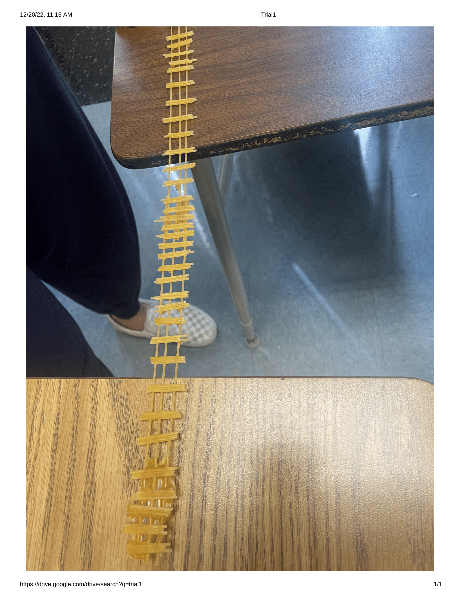 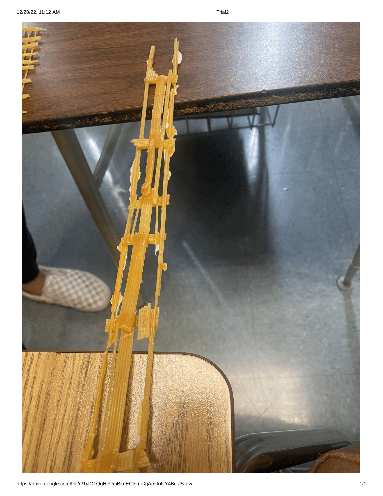12/20/2022
Testing day arrived. After working on Monday, gluing our project together so it could be 2 feet and sturdy it was time to test. We had two bridges but both of them did not hold a lot of water. I think our design was flawed because it didn´t contain a lot of traingels, which seemed to have held more weight. This project was one of my favorites we had done this year because we had to use our limited supplies to be able to buid a bridge that would hold a big bucket and water. Hopefully, next semester we could do something similar. 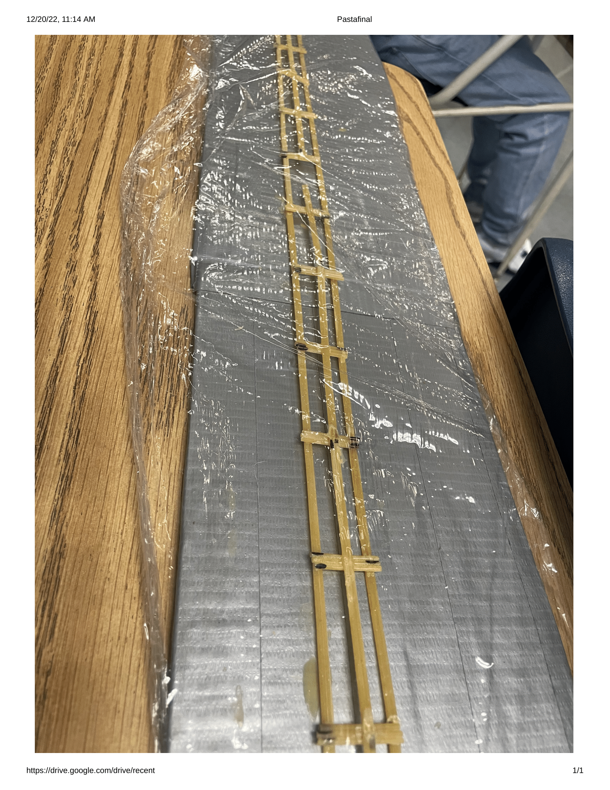 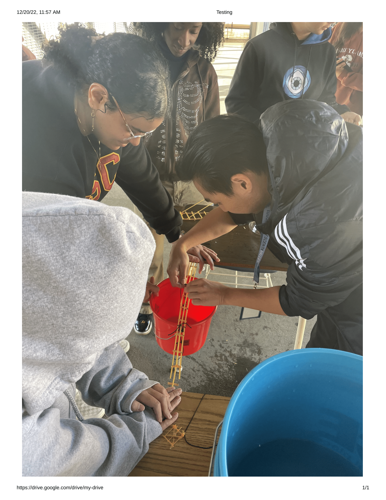1/9/2023
This week we had to work with our groups and invent a gadjet that could help improve life or make it easier. What my group and I decided was a foldable scooter. This would be able to fit in your backpack and whenever needed all you have to do is pull it out, causing it to unfold. Our target customers were college students and people living in big cities. College students could make it around campus faster, and people living in cities would not need to drive a car and find parking, becuase of the portbale scooter.
1/17/23 - 3/7/23
We were introduced a project for this semester, which was going to last 6 weeks and finally we finsihed. Jasmine, my partner for this project, and I chose to complete our project with the mechanical engineering field. As a result, our project was to build a car which was powered by a moustrap. OUr orginal desgin consisted of two moustraps in order to make the car go faster and at a longer distance, however after being told only one was allowed we changed our desgin. For the first two weeks we planned what materials we were going to use as well as how are desgin was going to work and on the third week we actually began working on our project. We cut out cardboard pieces and glued togeher wheels. After the third week the basic desgin of our car was done, but that was the easy part. It was at week four where we decided that our wheels must have tape around them because they didn't contact the ground enough and would just spin there if nothing was added to it. Week five we tried connecting the moustrap to the sticks which were going to spin the wheels. At first we directly tied the string to the moustrap, but that didn't give the trap enough power to spin the wheels, so we decided to add a stick, however it was a popsicle stick. This was an issue because the short stick also was overpowering the energy of the mousetrap. Finally we concluded that we needed a long stick, like a Kebab stick, to help the moustrap move the wheels and it finally worked.We tried a couple tiems but something wasn't right, so on the day of the assignment due date, I quickly decided it was necessary to remove one of the two wheels in the front, which was going to remove friction. And finally it worked. THis assignment was difficult but it made me realize how important it is to think of every step when trying to build a machine. I really enjoyed the challenge and the feeling of satisfaction when we finally got our car to work. 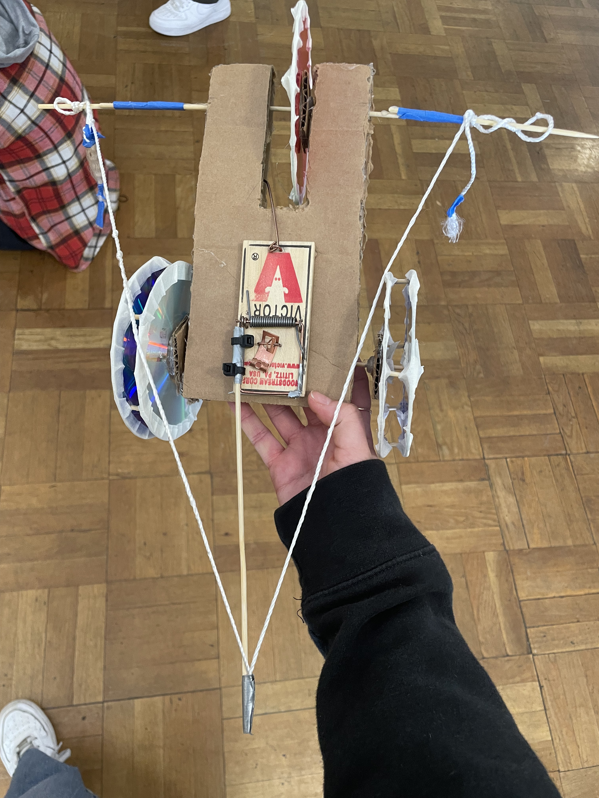.jpg) 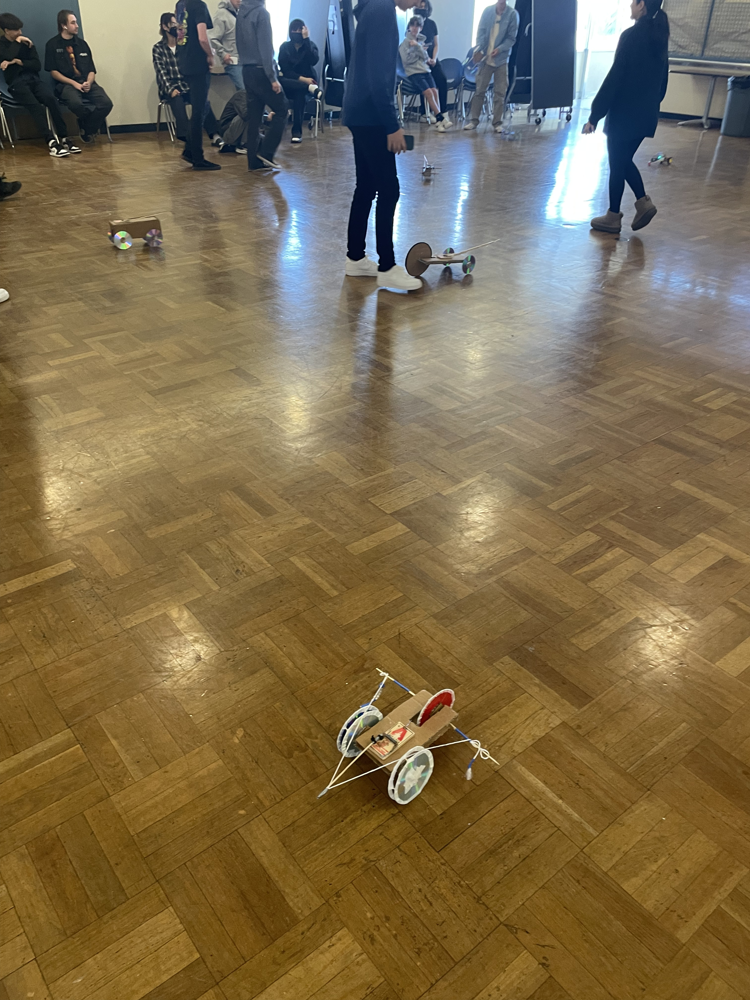
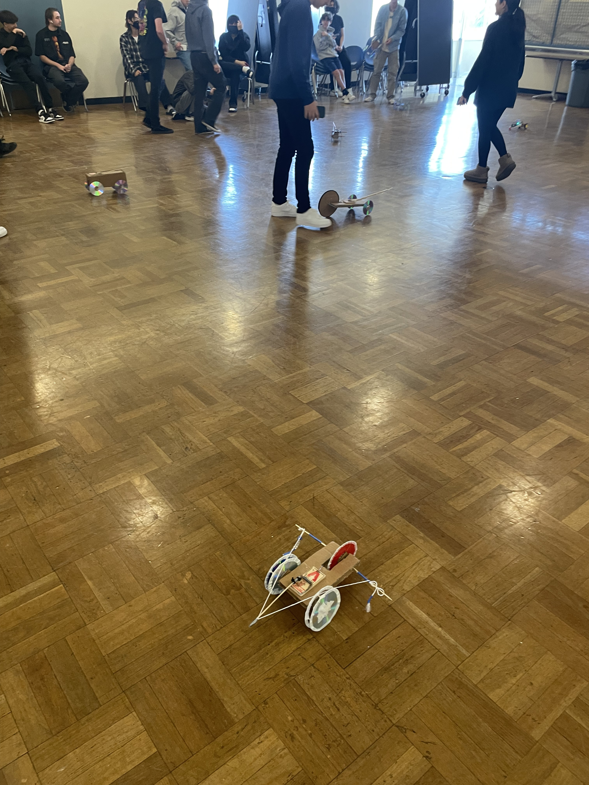
3/20/2023-3/31/2023
We were challenged to build a device that would hold an egg that won't crack after being dropped off a three story building. We were given a limited amount of supplies to work with, so we used cotton, ballons, straws, and cardboard. Our design consisted of a cardboard box full of cotton balls as well as small ballons inside the box. We then added straws around it in hopes for the straws to absorb the impact, protecting the egg. Lastly, we put a balloon on each side of our design. Our desgin worked as expected and did not break once we dropped it from the 3 story building. 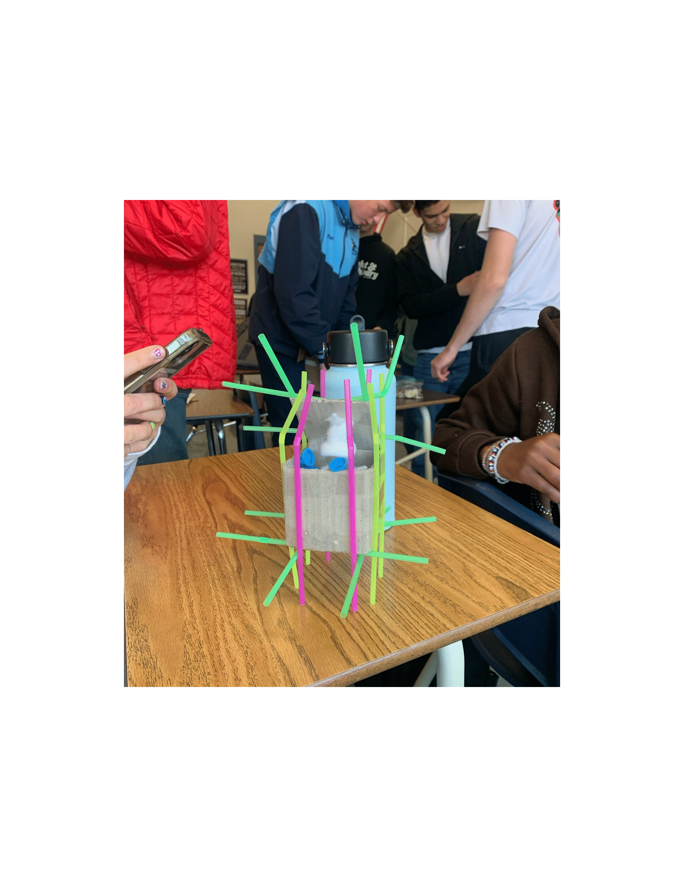4/3/2023-4/10/2023
This week we worked on the design of our boat. We had a few ideas. One being a raft that would be built with tupe cardboards which would be 7x7. Our other design was a closed off kayak kind of thing, but we decided that wouldn't work because the surface area wouldn't be big enough. Next week we will start working on the building of our boat.4/10/2023-4/14/2023
This week we worked on physically building our boat. It was challenging to work with such a big peace of cardboard but it worked out in the end. We didn't get too far because we were more focused on having a solid structure, but hopefully we will do more next week
4/17/2023-4/21/2023
This week we worked on making the longest bridge with using only 20 post it cards. Our groups strategy was to cut the post it as small as we could and then attatch the ends from the sticky ends. We were able to build the longest bridge and although it was occasianally breaking, we got it to hold up. This project was fun because it tested our ability to think outside the boX and undestand mechanical engineering. 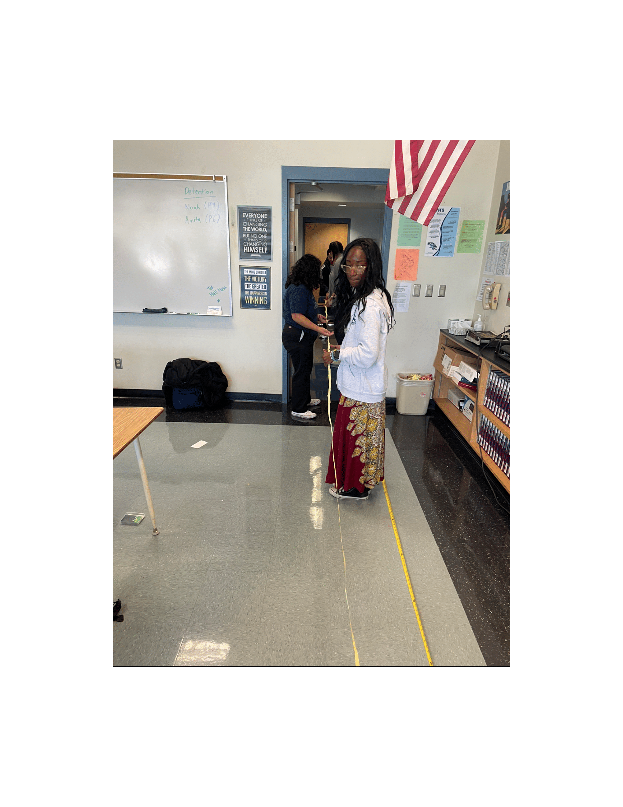 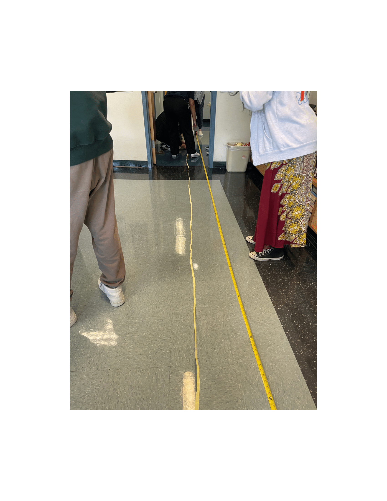